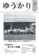
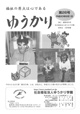
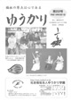
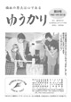
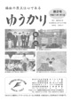

|
 第６１号 第６１号
- ・令和2年 年頭のご挨拶
- ・即位礼正殿の儀 参列報告
- ・こえだ物語56
- ・今日の仲間44
- ・施設だより
- ・お知らせ他
|
|
|
|
 第５８号
第５８号
- ・平成31年 年頭のご挨拶
- ・こえだ物語53
- ・今日の仲間41
- ・施設だより
- ・お知らせ他
|
第５９号
- ・『令和』新時代を迎えて
- ・こえだ物語54
- ・今日の仲間42
- ・施設だより
- ・お知らせ他
|
第６０号
- ・組織の活性化を図るには
- ・こえだ物語55
- ・今日の仲間43
- ・施設だより
- ・お知らせ他
- ・2019年度事業計画
|
|
第５５号
- ・平成30年 年頭のご挨拶
- ・こえだ物語50
- ・今日の仲間38
- ・施設だより
- ・お知らせ他
|
第５６号
- ・RESTART!
- ・こえだ物語51
- ・今日の仲間39
- ・施設だより
- ・お知らせ他
|
第５７号
- ・開設から5年を経て
- ・こえだ物語52
- ・今日の仲間40
- ・施設だより
- ・お知らせ他
- ・平成30年度事業計画
|
 |
第５２号
- ・平成29年 年頭のご挨拶
- ・こえだ物語47
- ・今日の仲間35
- ・施設だより
- ・お知らせ他
|
第５３号
- ・節目の年に
- ・こえだ物語48
- ・今日の仲間36
- ・施設だより
- ・平成29年度事業計画
|
第５４号
- ・創立60周年式典開催に
あたり
- ・こえだ物語49
- ・今日の仲間37
- ・施設だより
- ・お知らせ他
|
 |
第４９号
- ・平成28年 年頭のご挨拶
- ・こえだ物語44
- ・今日の仲間32
- ・施設だより
- ・お知らせ他
|
 第５０号
第５０号
- ・平成28年度社会福祉
法人ゆうかり学園の
取り組みについて
- ・こえだ物語45
- ・今日の仲間33
- ・施設だより
- ・平成28年度事業計画
|
 第５１号
第５１号
- ・相模原の事件について
思うこと
- ・こえだ物語46
- ・今日の仲間34
- ・施設だより
- ・お知らせ他
|
|
第４６号
- ・年頭に当たって
- ・こえだ物語41
- ・今日の仲間29
- ・施設だより
- ・お知らせ他
|

第４７号
- ・これからの法人運営の
あり方について
- ・こえだ物語42
- ・今日の仲間30
- ・施設だより
- ・平成27年度事業計画
|
第４８号
- ・移転してから一年が経ち
- ・こえだ物語43
- ・今日の仲間31
- ・施設だより
- ・お知らせ他
|
|
第４３号
- ・年頭に当たって
- ・こえだ物語38
- ・今日の仲間26
- ・施設だより
- ・お知らせ他
|
第４４号
- ・障害者施策について
- ・こえだ物語39
- ・今日の仲間27
- ・施設だより
- ・お知らせ他
- ・平成26年度事業計画
|
第４５号
- ・千歳療護園竣工特集
- ・こえだ物語40
- ・今日の仲間28
- ・施設だより
- ・お知らせ他
|
|
- 第４０号
- ・年頭に当たって
- ・こえだ物語35
- ・今日の仲間23
- ・施設だより
-
|
- 第４１号
- ・新天地での運営始まる
- ・利用者や保護者の声
- ・太陽光発電設備設置の
お知らせ
- ・こえだ物語36
- ・平成25年度事業計画
|
- 第４２号
- ・施設機能の地域開放
- ・新築記念事業の案内
- ・こえだ物語37
- ・今日の仲間25
- ・施設だより
- ・お知らせ他
|
|
- 第３７号
- ・年頭に当たって
- ・こえだ物語32
- ・施設だより
- ・今日の仲間20
|
- 第３８号
- ・耳納学園開園40周年
- ・今日の仲間21
- ・こえだ物語33
- ・施設だより
- ・お知らせ
- ・平成24年度事業計画
|
- 第３９号
- ・九州北部豪雨災害による
非難生活を経験して
- ・こえだ物語34
- ・今日の仲間22
- ・施設だより
|
|
- 第３４号
- ・年頭に当って
- ・こえだ物語29
- ・今日の仲間17
- ・施設だより
|
- 第３５号
- ・3・11、東日本大震災
について想う
- ・こえだ物語30
- ・今日の仲間18
- ・施設だより
- ・平成23年度事業計画
|
- 第３６号
- ・ゆうかり学園移転新築
工事について
- ・こえだ物語31
- ・施設だより
- ・今日の仲間19
|
|
- 第３１号
- ・年頭に当って
- ・こえだ物語26
- ・今日の仲間14
- ・施設だより
|
- 第３２号
- ・感染症対策をふりかえる
- ・こえだ物語27
- ・今日の仲間15
- ・施設だより
|
- 第３３号
- ・ゆうかりと保護者会の
連携を考える
- ・こえだ物語28
- ・施設だより
- ・今日の仲間16
|
|
- 第２８号
- ・年頭に当って
- ・こえだ物語23
- ・今日の仲間11
- ・施設だより
|
- 第２９号
- ・日・韓福祉施設職員研修
交流10年を思う
- ・こえだ物語24
- ・今日の仲間12
- ・施設だより
- ・平成21年度事業計画
|
- 第３０号
- ・千歳療護園設立30周年
記念旅行を企画・実施して
- ・こえだ物語25
- ・今日の仲間13
- ・施設だより
|
|
- 第２５号
- ・年頭のご挨拶
- ・こえだ物語20
- ・今日の仲間8
- ・施設だより
|

- 第２６号
- ・信頼される組織を目指して
- ・こえだ物語21
- ・今日の仲間9
- ・施設だより
- ・平成20年度事業計画
|
- 第２７号
- ・障害児支援の見直し検討会
報告について
- ・こえだ物語22
- ・今日の仲間10
- ・施設だより
|
|

- 第２２号
- ・新年のご挨拶
- ・こえだ物語17
- ・今日の仲間5
- ・施設だより
|
- 第２３号
- ・ニュー『セルプ耳納学園』
を目指して
- ・こえだ物語18
- ・今日の仲間6
- ・施設だより
- ・平成19年度事業計画
|

- 第２４号
- ・ゆうかり学園
創立五十周年を祝う
- ・施設長挨拶
- ・こえだ物語19
- ・今日の仲間7
- ・施設だより
|
|
- 第１９号
- ・新年のご挨拶
- ・こえだ物語14
- ・今日の仲間2
- ・施設だより
- ・たのしかったクリスマス会
|
- 第２０号
- ・障害者自立支援法
施行後の現状と課題
- ・こえだ物語15
- ・今日の仲間3
- ・施設だより
|
- 第２１号
- ・障害者自立支援法に
関わる制度実行に向けて
- ・こえだ物語16
- ・今日の仲間4
- ・施設だより
|
|

- 第１６号
- ・輝ける新年を迎えて
- ・こえだ物語11
- ・施設だより
～がんばったね、運動会～
|
- 第１７号
- ・施設だより
- ・こえだ物語12
- ・卒業おめでとう
- ・オートレース
|
- 第１８号
- ・障害保健福祉施策の動向
- ・平成16年度事業報告書
平成17年度事業計画書
- ・こえだ物語13
- ・今日の仲間
- ・施設だより
|
|
- 第１３号
- ・年頭に当って
- ・こえだ物語8
- ・施設だより
|
- 第１４号
- ・施設だより
- ・「壁を取り払って
保護者の連携を！」
- ・こえだ物語9
- ・お知らせ
|
- 第１５号
- ・支援費制度、
見えてきた課題
- ・平成15年度事業報告
平成16年度事業計画
- ・平成15年度
本法人の決算状況
- ・施設だより
- ・こえだ物語10
|
|
- 第１０号
- ・支援費制度
いよいよスタート
- ・こえだ物語5
- ・施設だより
- ・厚生労働大臣
表彰を受けて
- ・「福岡県ふれあいの翼」
に参加して
|
- 第１１号
- ・施設だより
- ・こえだ物語6
- ・お知らせ
|
- 第１２号
- ・平成14年度事業報告書
平成15年度事業計画書
- ・平成14年度
本法人の決算状況
- ・施設だより
- ・こえだ物語7
|
|

- 第８号
- ・新年のご挨拶
- ・理念・使命・目的
- ・施設だより
- ・今日の仲間3
|
- 第９号
- ・平成13年度事業報告書
平成14年度事業計画書
- ・施設だより
- ・こえだ物語4
- ・保護者会って何
|
|
 |
- 第６号
- ・二十一世紀あけまして
おめでとうございます
- ・こえだ物語1
- ・施設だより
|
- 第７号
- ・平成12年度事業報告書
平成13年度事業計画書
- ・こえだ物語2
- ・施設だより
|
|
|
- 第４号
- ・新年のご挨拶
- ・【特集】楽しかった
盆踊り・大運動会
- ・施設だより
- ・耳納焼・みのう窯
|
- 第５号
- ・平成11年度事業報告書
平成12年度事業計画書
- ・韓国瑞林福祉院を訪問
- ・林副院長他3名
ゆうかり学園を訪問
- ・施設だより
|
|
|

- 第２号
- ・新年のご挨拶
- ・施設だより
- ・利用者の声
|
- 第３号
- ・平成10年度事業報告書
平成11年度事業計画書
- ・福祉の心
－優しさときびしさ－
- ・施設だより
|
|
|
- 第１号
- ・「ゆうかり」発刊にあたり
- ・平成10年度事業計画書
平成9年度事業計画書
- ・地域療育事業についての
取り組み
- ・保護者会役員名簿
- ・盆踊り大会について
|
|
|